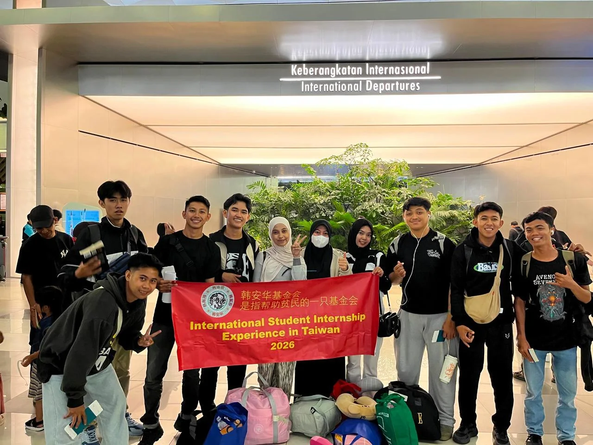
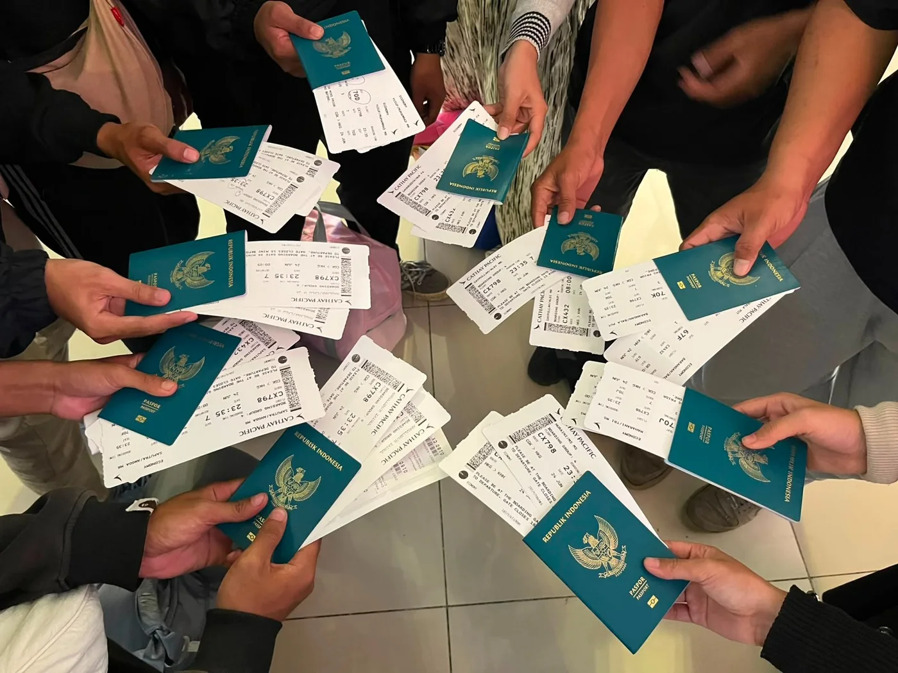
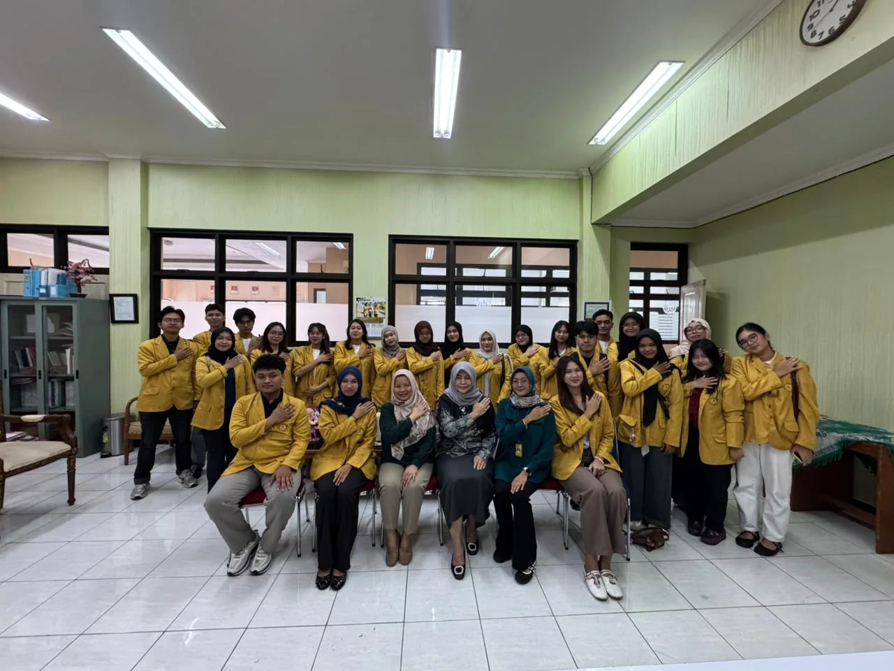
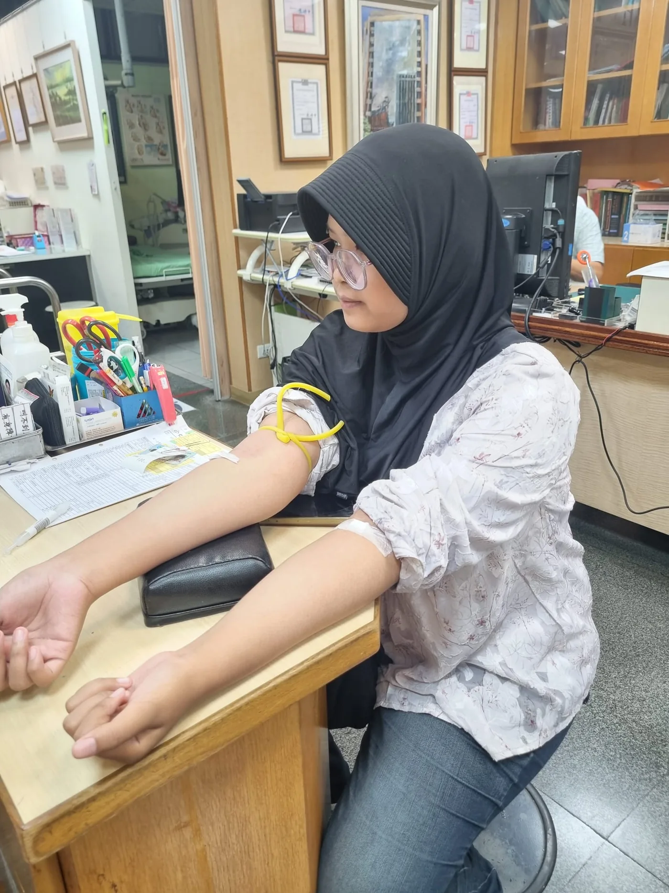
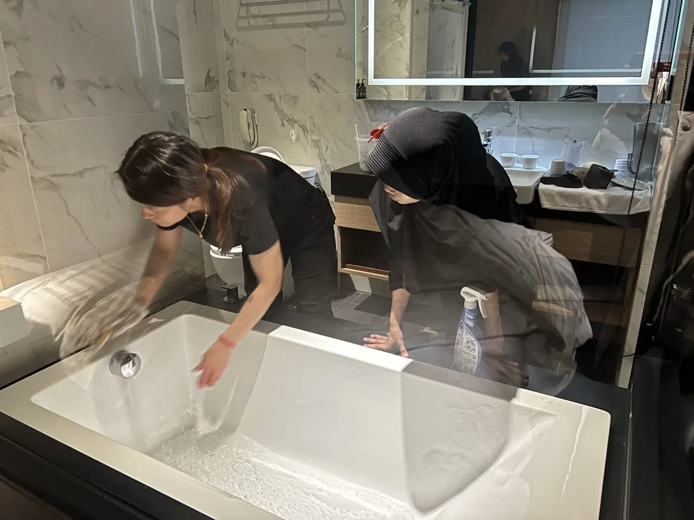
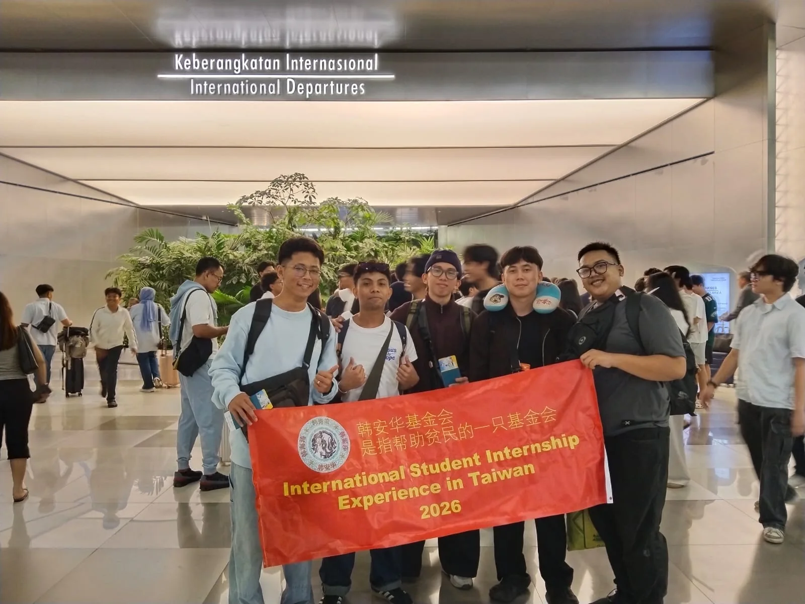
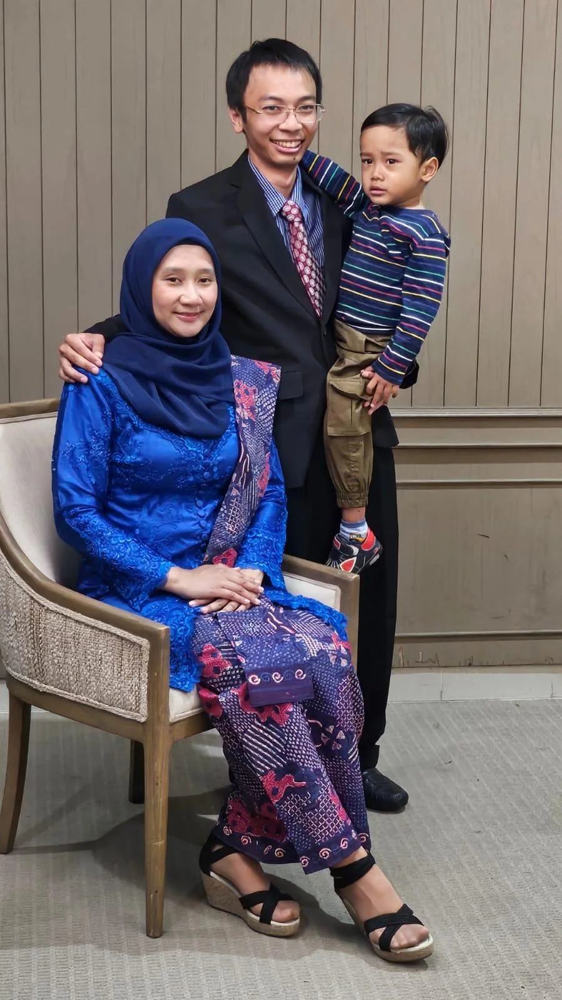

01
UNTUK MAHASISWA AKTIF
Magang Mahasiswa
Program magang di hotel dan resort Taiwan selama 2–4 semester.
Lihat posisi magang ↘
SEJAK 2017 • INDONESIA ↔ TAIWAN
Membuka peluang internasional yang terarah bagi pelajar, mahasiswa, dan institusi pendidikan Indonesia.


TENTANG KAMI
Yayasan Han An Hua membantu institusi pendidikan membuka akses menuju program pendidikan, magang, dan pengembangan bahasa di Taiwan.
Lihat bentuk kerja sama →PROGRAM KAMI
UNTUK MAHASISWA AKTIF
Program magang di hotel dan resort Taiwan selama 2–4 semester.
Lihat posisi magang ↘UNTUK LULUSAN SMP / PELAJAR
Jalur pendidikan selama 3 tahun di SMA dan 4 tahun di perguruan tinggi di Taiwan.
Lihat bidang pendidikan ↘
UNTUK PESERTA PROGRAM
Kelas Bahasa Mandarin dan persiapan TOEIC untuk mendukung kesiapan belajar dan berkomunikasi.
Diskusikan program ↘
KOLABORASI
Kami menghubungkan institusi pendidikan dengan mitra yang sesuai untuk menghadirkan program yang terarah dan bermanfaat bagi peserta.
BIDANG PRIORITAS
Terbuka bagi mahasiswa aktif dari Perhotelan, Pariwisata, Tata Boga, Bahasa, Manajemen, dan bidang terkait.
Kebersihan dan penataan kamar, pemeriksaan fasilitas, serta standar layanan hotel.
Pelayanan restoran, penataan meja, komunikasi dengan tamu, dan persiapan area makan.
Persiapan bahan makanan, kebersihan area kerja, dan penerapan keamanan pangan.
PILIHAN BIDANG PENDIDIKAN 3+4
PERJALANAN PESERTA




DOKUMENTASI
Klik foto untuk melihat lebih besar.

DIREKTUR YAYASAN
Lulusan Beijing Normal University, Tiongkok, dan University of Würzburg, Jerman.
MARI BERKOLABORASI
Kontak kerja sama ditujukan kepada dekan, ketua program studi, pimpinan perguruan tinggi, ketua yayasan, dan kepala sekolah.